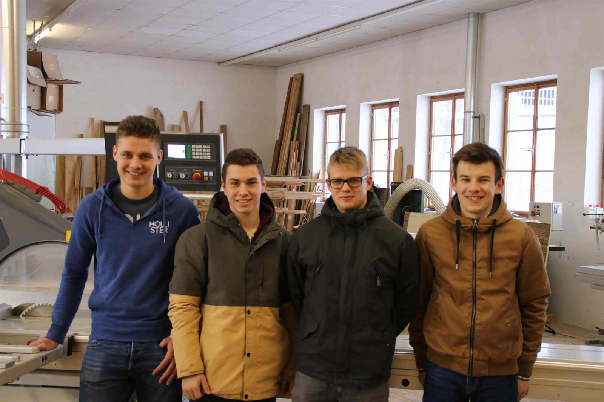

Alois Pachinger
Firmengründer und Eigentümer
Produktion und Verkauf
Team · Geschichte · Karriere
Für Alois Pachinger war das Arbeiten mit Holz immer eine Beschäftigung, die Freude macht. Aus der Werkstatt neben der Landwirtschaft wurde im Jahr 2000 der Hauptberuf – und daraus ein Betrieb mit eigener Werkstatt, Planung und Montage.

Werdegang
Die Lehre als Tischler war die naheliegende Entscheidung. Nach dem Lehrabschluss arbeitete Alois Pachinger lange Zeit in einer großen Tischlerei. Nach der Hochzeit führten er und seine Frau eine Landwirtschaft – die Arbeit in der Werkstatt blieb ein gern gesehenes Hobby, das er im Jahr 2000 zum Hauptberuf machte.
Weil die Auftragslage immer größer wurde, waren der Bau einer größeren Werkstatt und das Einstellen von Mitarbeitern eine Notwendigkeit. Neben dem Produzieren verschiedenster Einrichtungsgegenstände ist die Tischlerei Pachinger auf Kastenfenster in Neubauten sowie Althaussanierungen spezialisiert.
Geschichte
Das Unternehmen fokussierte sich anfangs auf Möbelbau im Massivholzbereich, Bautischlerarbeiten und die Fertigung von Kastenfenstern.
Andreas Weißenböck wurde als erster Mitarbeiter angestellt – heute ist er Geschäftsführer des Betriebs.
Aus wirtschaftlichen Gründen wurde der Einzelbetrieb in die Tischlerei Pachinger GmbH umgewandelt.
2014 wurde die Planung durch Ing. Werner Elmecker erweitert, 2017 kam Helmut Haghofer in die Produktion.
Planung, Fertigung und Montage laufen unverändert im eigenen Haus – mit Schwerpunkt auf Kastenfenstern, Althaussanierung und Inneneinrichtung.
Das sind wir
Firmengründer und Eigentümer
Produktion und Verkauf
Geschäftsführer
Produktion und Verkauf, seit 2006 im Betrieb
Planung
Planung und Inneneinrichtung, seit 2014 im Betrieb
Produktion
Fertigung in der Werkstatt, seit 2017 im Betrieb
Dazu kommen weitere Mitarbeiter in der Produktion. Der Betrieb ist Mitglied der Wirtschaftskammer Österreich.

Karriere
In einem kleinen Betrieb sieht man, was man gebaut hat. Wer bei uns arbeitet, begleitet ein Stück vom Aufmaß über die Fertigung bis zur Montage – und nicht nur einen Arbeitsschritt.
Wir bilden Tischlerinnen und Tischler im eigenen Betrieb aus. Wer sich den Beruf zuerst ansehen möchte, vereinbart einen Schnuppertag – einfach im Formular auswählen.
Aktuell ist keine Stelle ausgeschrieben? Initiativbewerbungen sehen wir uns trotzdem an. Fragen beantwortet Andreas Weißenböck unter 07949 / 20110.
